|
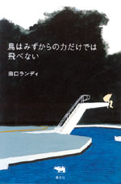
|
日本文学 | ||||||
| 鳥はみずからの力だけでは飛べない | |||||||
| 田口ランディ | |||||||
| 四六判 224頁 | |||||||
| 定価1470円（本体1400円） | |||||||
| 4-7949-6665-2 C0095 | |||||||
| 「一穂、学校に行っていないんだってね？」ひきこもっている友人の息子に向けて書いた十通の手紙から、なぜ学校へいかなければならない？ 大人になるってどういうこと？生きることに意味はある？など、人生における根源的な問いがうかびあがる。さまざまな悩みを抱えながら生きる若者たちとその親の世代にむけた、著者の真摯なメッセージ。 | |||||||
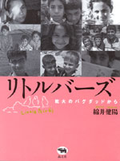 |
映画・ノンフィクション | ||||||
| リトルバーズ 戦火のバグダッドから |
|||||||
| 綿井健陽 | |||||||
| A5変型判 180頁 | |||||||
| 定価1680円（本体1600円） | |||||||
| 4-7949-6666-0 C0022 | |||||||
| アメリカ軍によるイラク侵攻以来、「News23」などで精力的にイラクからの中継リポートを続け数々の賞を受賞したジャーナリスト綿井健陽。その綿井監督が１年半の取材映像から完成させた映画『Little Birds』は、本当のイラク戦争の姿を描いた話題作。その撮影日記、ルポとイラクの現状を伝える衝撃的な写真とで構成するノンフィクション。 | |||||||
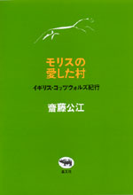 |
イギリス・紀行 | ||||||
| モリスの愛した村 | |||||||
| 齊藤公江 | |||||||
| 四六判 258頁 | |||||||
| 定価1995円（本体1900円） | |||||||
| 4-7949-6658-x C0095 | |||||||
| ウィリアム・モリスの理想の地は、テムズ川上流にひろがる、灰色の石でつくられた村々だった。そこにはイングランドの古き良き伝統が生きており、モリスに大きな影響をあたえた。ケルムスコット村をはじめ、その地方に点在するモリスゆかりの土地をたずね、その生涯と活動をわかりやすくたどる。本文で紹介される美しい風物を収めたＤＶＤ付。 | |||||||
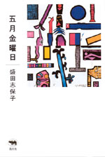 |
短歌・エッセイ | ||||||
| 五月金曜日 | |||||||
| 盛田志保子 | |||||||
| 四六判 １９２頁 | |||||||
| 定価1680円（本体1600円） | |||||||
| 4-7949-6662-8 C0095 | |||||||
| 鬱蒼とした森の気配、素足で土を踏む感触、空の高さ、朝の雫、木陰のひんやりとした風……。インターネット世代の若き歌人が、都市の隙間に拾い上げる幻想の風景。夜の呼吸に耳をそばだてて、心の奥にしまわれた野生のかけらを呼び覚ます。日本語の美しさを保ちながら、若い感性にしかとらえきれない刹那な風景をみせる散文集。 | |||||||
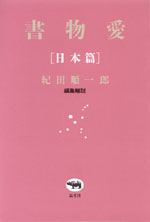 |
日本文学 | ||||||
| 書物愛【日本編】 | |||||||
| 紀田順一郎編 | |||||||
| 四六判 336頁 | |||||||
| 定価1995円（本体1900円） | |||||||
| 4-7949-6663-6 C0093 | |||||||
| 世界で一冊しかない本。手にとる者の魂をうばう美しい本。人から人へと数奇な運命をたどる本。書物の達人が、本を主題とする知られざる名作、かくれた傑作を発掘する待望のアンソロジー。収録作品ー夢野久作「悪魔祈祷書」、島木健作「煙」、由起しげ子「本の話」、野呂邦暢「本盗人」、宮部みゆき「歪んだ鏡」ほか全９篇。 | |||||||
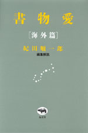 |
外国文学 | ||||||
| 書物愛【海外編】 | |||||||
| 紀田順一郎編 | |||||||
| 四六判 356頁 | |||||||
| 定価1995円（本体1900円） | |||||||
| 4-7949-6664-4 C0097 | |||||||
| 世界で一冊しかない本。手にとる者の魂をうばう美しい本。人から人へと数奇な運命をたどる本。書物の達人が、本を主題とする知られざる名作、かくれた傑作を発掘する待望のアンソロジー。収録作品ーフローベール「愛書狂」、アナトール・フランス「薪」、ギッシング「クリストファスン」、ツヴァイク「目に見えないコレクション」ほか全11篇。 | |||||||
 |
外国文学 | ||||||
|
植草甚一スクラップ・ブック17巻 第8回配本 アメリカ小説を読んでみよう |
|||||||
| 四六判 256頁 | |||||||
| 定価1470円（本体1400円） | |||||||
| 4-7949-2577-8 C0390 | |||||||
| 現代アメリカ作家のことなら、みんな友達みたいによく知っている我らがＪＪ氏──ジョン・オハラやテネシー・ウィリアムズの話をはじめ、集めぬいた本の山から選んだ心躍る読書案内「ぼくの好きな５０冊の小説」など。ほかにＶ・ナボコフについての一章も収録。（解説・宮本陽吉） | |||||||
 |
ジャズ | ||||||
|
植草甚一スクラップ・ブック25巻 第8回配本 ジャズの十月革命 |
|||||||
| 四六判 240頁 | |||||||
| 定価1470円（本体1400円） | |||||||
| 4-7949-2585-9 C0373 | |||||||
| モダン・ジャズの世界に次つぎと素晴らしい音楽の冒険を繰りひろげる大勢のミュージシャンたち。オーネット・コールマンとセシル・テイラーを中心に、鮮やかな描写で、まるで「ジャズの十月革命」の現場に居合わせるような興奮を呼びおこす好エッセイ。ジャズ・アヴァンギャルドに貢献した音楽家の肖像を描き出す。（解説・平岡正明） | |||||||
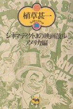 |
映画 | ||||||
|
植草甚一スクラップ・ブック28巻 第8回配本 シネマディクトJの映画散歩 アメリカ編 |
|||||||
| 四六判 272頁 | |||||||
| 定価1470円（本体1400円） | |||||||
| 4-7949-2588-3 C0374 | |||||||
| エリア・カザン、ジョン・ヒューストン、ウイリアム・ワイラー、ビリー・ワイルダーなど、十三人の第一級アメリカ映画監督をとりあげ、それぞれの作品に即したかたちで、映画のつくりかたの秘密を探り出す、シネマディクトＪの面目躍如としたアメリカ映画論。沢山のアメリカ映画の作り手からＪＪ氏は何を学んだのか？（解説・池波正太郎） | |||||||
晶文社出版の本 TEL.03-5688-6881 |
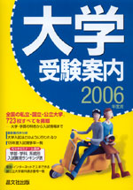 |
学校案内 | ||
| 大学受験案内 2006年度用 | |||
| 晶文社出版編集部編 | |||
| A5判 1402頁 | |||
| 定価2310円（本体2200円） | |||
| 4-7949-9766-3 C7037 | |||
| 大学案内の超定番！ 全国の国公私立大学をすべて収録。各大学の一般入試、推薦入試、AO入試など各種の入試情報を盛り込んで、さらに内容充実。代々木ゼミナール提供の入試難易ランキング表、最新の学部・学科紹介、入試競争率、「大学入試はどのように行われるか」の開設など、大学を知るには、この１冊！ | |||
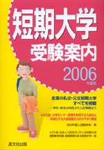 |
学校案内 | ||
| 短期大学受験案内 2006 年度用 | |||
| 晶文社出版編集部編 | |||
| A5判 542頁 | |||
| 定価2100 円 (本体 2000 円) | |||
| 4-7949-9756-6 C7037 | |||
| 全国の公立、私立短期大学をすべてを紹介。学科・専攻の特色から入試情報、４年制大学への編入学などの最新情報を掲載。AO入試、大学センター試験を利用する入試など、多様化する入試制度もわかりやすく解説。入試競争率一覧付き。 | |||
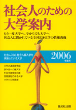 |
学校案内 | ||
| 社会人のための大学案内 2006年度用 | |||
| 晶文社出版編集部編 | |||
| A5判 240頁 | |||
| 定価1995円（本体1900円） | |||
| 4-7949-9490-7 C0037 | |||
| 今からでも大学へ、もう一度大学へ！ 社会人入試、社会人編入学を実施している大学を中心に、通信教育部、夜間課程、医学部の編入学、科目等履修生制度、公開講座など、社会人に開かれている全国の大学の最新情報を紹介。仕事を持つ人も、主婦も、定年後の人生に踏み出す人も、学ぶことに関心のあるすべての人のための大学の新しい利用法ガイド。 | |||
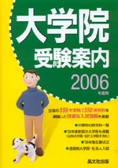 |
学校案内 | ||
| 大学院受験案内 2006年度用 | |||
| 晶文社出版編集部編 | |||
| A5判・932頁 | |||
| 定価3150円（本体3000円） | |||
| ISBN4-7949-9658-6 C0037 | |||
| 全国にある大学院の研究科の最新情報をまとめて紹介。分野別の研究科一覧を2色で見やすく掲載した。‘05年度新設、改組の大学院、研究科、専攻について、また専門職大学院（法科大学院ほか）、通信制の大学院についても紹介した。’05年度応募状況一覧も掲載。 | |||
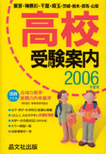 |
中学・学校案内 | ||
| 首都圏 高校受験案内 2006年度用 | |||
| 晶文社出版編集部編 | |||
| A5判 1544頁 | |||
| 定価2100円（本体2000円） | |||
| ISBN4-7949-9746-9 C6037 | |||
| 東京・神奈川・千葉・埼玉を中心に首都圏の高校を紹介。私立381校は見開き２ページに、①グラフ化した見やすい「卒業後の進路」②過去３年間の「主な大学合格状況」③学力別公立・私立の「併願校の例」④コース編成、授業内容、海外研修、土曜日の学校での過ごし方といった各校の「特色」⑤「入試要項（2005年春）」など、情報満載。巻頭で制服の写真を328校、巻末で'05年春の大学への合格状況を掲載。 | |||
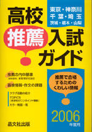 |
中学・学校案内 | ||
| 首都圏 高校推薦入試ガイド 2006年度用 | |||
| 晶文社出版編集部編 | |||
| A5判 600頁 | |||
| 定価1995円（本体1900円） | |||
| ISBN4-7949-9376-5 C6037 | |||
| 東京・神奈川・千葉・埼玉の全校と、茨城・栃木・山梨の主な高等学校の推薦入試データを網羅！ ①推薦入試での作文課題 ②面接の質問内容 ③'04年度卒業生の合格大学名 ③クラブ活動 などの情報を詳しく紹介。また、推薦の内申基準は表で明示してあり、志望校を選ぶ際に便利。制服のカラー写真も218点掲載している。 | |||
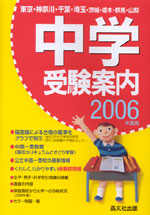 | 小学・学校案内 | ||
| 首都圏 中学受験案内 2006年度用 | |||
| 晶文社出版編集部編 | |||
| A5判 794頁 | |||
| 定価1995円（本体1900円） | |||
| ISBN4-7949-9736-1 C6037 | |||
| 首都圏の私立・国公立中学校を収載。中高一貫の教育内容や授業の内容、総合的な学習の取り組み、土曜日の学校での過ごし方などを紹介。さらに高校カリキュラムの先取り学習を行っている学校は、図式化し見やすく表示。くわしく、わかりやすい学力別・日程別併願校、併設高校から大学への合格状況（各校の紹介ページに過去３年間、巻末に'05年春）、164校の制服の写真を掲載。 | |||